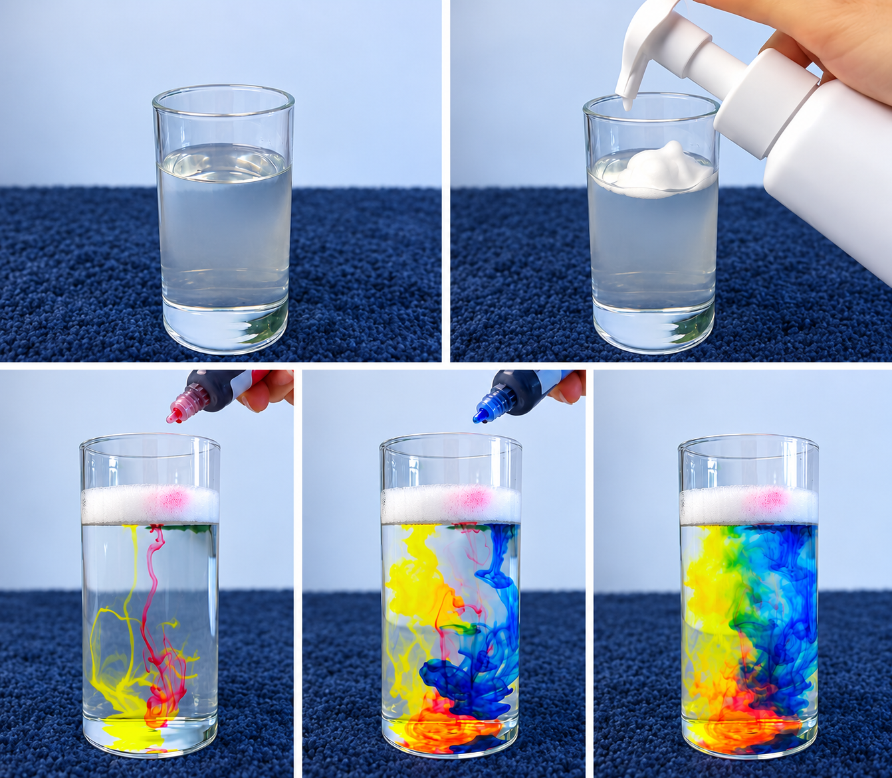

Rain Cloud in a Cup
Learning Experience
This simple science activity helps children explore how rain forms. Water is placed in a clear cup and shaving foam is added on top to represent a cloud. Children then use droppers to add food colouring onto the foam and observe how the colour slowly moves through the “cloud” and falls into the water like rain.

Through this experience, children can explore cause and effect, make predictions, observe changes and talk about what they see.
Learning Goals
Children will have opportunities to:
- explore how rain falls from clouds
- make simple predictions
- observe changes in colour and movement
- develop early science and problem-solving skills
- use new words to describe their observations
Materials
Clear cup, water, shaving foam, food colouring, droppers and a tray or mat.
How to Do It
- Fill the clear cup about three-quarters full with water.
- Add shaving foam on top to represent a cloud.
- Ask children what they think will happen next.
- Let children add drops of food colouring onto the foam.
- Observe the colour moving through the foam and falling into the water.
- Talk with children about how this is similar to rain falling from clouds.
EYLF Outcomes
Outcome 2 – Children are connected with and contribute to their world
Children explore a natural weather event and begin to understand the connection between clouds, rain and the environment around them.
Outcome 4 – Children are confident and involved learners
Children make predictions, observe changes and investigate how the coloured water moves through the shaving foam. This supports curiosity, inquiry, problem-solving and early science learning.
Outcome 5 – Children are effective communicators
Children describe what they can see, share their ideas and listen to others. They can also learn new words such as cloud, rain, water droplets, weather, colour and fall.
Educator’s Role
The educator supports children by encouraging them to observe, think and explain their ideas. Open-ended questions can be used, such as:
- “What do you think will happen?”
- “Why is the colour moving down?”
- “What can you see?”
- “What happens when we add more drops?”
Safety
Children should be closely supervised. Shaving foam and food colouring should not be eaten or placed near the eyes or mouth. Children should wash their hands after the activity.
Possible Extension
Children can go outside to observe real clouds, talk about the weather, or create their own rain-cloud artwork after the experiment.